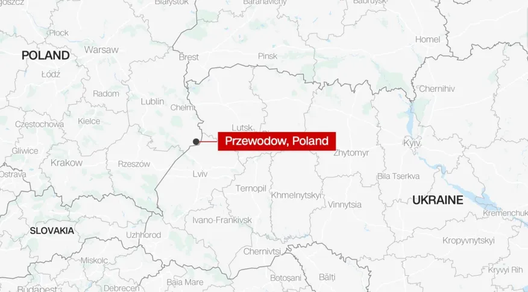

16/11 – Explosão na Polonia
Nesta quarta-feira (16), a Polonia sofreu explosões, que resultaram em 2 mortes.
A luta do país contra a Rússia se manteve por séculos (desde 1739), mas não planejavam voltar a um conflito.
Nesse momento, todos (inclusive a OTAN) se perguntam: os misseis realmente vieram da Rússia?
Ou, como muitos suspeitam, vieram da Ucrânia?
Matéria feita pela colaboradora @Yasmin
Local das exploões, imagem da CNN

Nesta quarta-feira (16), a Polonia sofreu explosões ao leste perto da fronteira com a Ucrânia, que resultou em 2 mortes.
Ainda não sabemos a origem dos misseis, mas a investigação está entre a Rússia e Ucrânia.
O Ministérios da Relações Exteriores da Polonia acredita que veio da Rússia, e então convocou Sergei Andreew.
A Rússia lançou vários misseis na Ucrânia no dia, visando atacar sua infraestrutura da energia, fazendo 7 milhões de ucranianos ficarem sem luz.
Como a Polonia participa da OTAN (Organização do Tratado do Atlântico Norte, nome da aliança político-militar que surgiu em 1949 e reúne mais de 30 países do hemisfério norte do planeta), é preocupante as consequências do país que cometeu a ação, por isso estão no aguardo de informações mais concretas!
Como declarou o presidente dos Estados Unidos, Joe Biden “Existe uma informação preliminar que contesta isso (que o míssil veio da Rússia). Eu não quero afirmar isso antes de a investigação ser concluída, mas pela trajetória do míssil é pouco provável que ele tenha sido disparado da Rússia".
É compreensível que o Biden custe acreditar que os misseis vieram da Rússia, já que se for isso, uma guerra poderá começar, entre vários países contra as forças Russas. Se não chegar neste caso, poderão consultar-se por causa da possível ameaça, o que já aconteceu 7 vezes.
A Rússia afirma que os misseis não atingiram 35 quilômetros perto da fronteira com a Polonia, e pode ter vindo dos antimísseis S-300, da Ucrânia.
Ainda assim, a Ucrânia diz que todas as consequências da guerra seguem como culpa das forças da Russas, que começaram tudo isso.
Apesar disso, a Polonia segue com receio, já que lutou por séculos pela sua sobrevivência, sempre mostrando o perigo da Rússia.
Tanto que, em março, decidiu colocar 3% do PIB (Produto Interno Bruto) para o orçamento de defesa, em 2023, com a intenção de continuar aumentando. Ainda acrescentou:
"A lei foi elaborada com base na nossa experiência nos últimos anos, que mostrou, claramente, que a Rússia é capaz de usar a força para atingir seus interesses, para pôr em marcha seus planos para a reconstrução do império".
O que a tranquiliza é a proteção da OTAN, como Biden pronunciou em uma reunião de emergência com os líderes do G20:
“Nós concordamos em ajudar a investigação polonesa sobre a explosão perto da fronteira com a Ucrânia. Nós vamos tomar uma decisão coletiva sobre quais serão os próximos passos ao fim da investigação" Além disso, mesmo que os misseis não tenham sido um atentado Russo, a OTAN acredita que a continuidade da guerra pode trazer mais problemas.
Veja os países que se pronunciaram:
Presidente da Ucrânia, Volodymyr Zelenksky – "Estou convencido que agora é o momento em que a guerra pode e deve ser interrompida"
Após a confirmação sobre a explosão, a Otan afirmou que está em contato com a Polônia.
Porta-voz do Departamento de Estado dos Estados Unidos, Vedant Patel – "Estamos trabalhando com nossos parceiros do governo polonês e nossos parceiros da Otan para obter mais informações e avaliar o que aconteceu. Faremos essa determinação e também determinaremos as próximas etapas apropriadas".
Presidente da França, Emmanuel Macron – "Trabalhos de verificação necessários".
Secretário de Relações Exteriores do Reino Unido, James Cleverly, afirmou que o governo britânico está "investigando com urgência relatos de mísseis caindo na Polônia”.
Estônia – "Estamos consultando de perto a Polônia e outros aliados. A Estônia está pronta para defender cada centímetro do território da Otan. Estamos em total solidariedade com a nossa aliada próxima Polônia".
Presidente da Lituânia, Gitanas Nauseda – "Cada centímetro de território da Otan deve ser defendido".
Primeiro-ministro da Eslováquia, Eduard Heger – "Entrei em contato o primeiro-ministro polonês Mateusz Morawiecki para expressar nossa solidariedade e total apoio. Vamos consultar a Polônia e outros aliados sobre a situação".
Primeiro-ministro da República Tcheca, Petr Fiala – "Se a Polônia confirmar que os mísseis também atingiram seu território, isso será uma nova escalada da Rússia. Apoiamos firmemente nosso aliado de União Europeia e Otan".
Primeiro-ministro letão Krisjanis Karins – "A Letônia e seus aliados da Otan estão prontos para qualquer situação para defender seus cidadãos e territórios".
Primeiro-ministro da Bélgica, Alexander De Croo – "A Bélgica está com a Polônia. Todos fazemos parte da família Otan que, mais do que nunca, está unida e equipada para proteger a todos nós".
Reino Unido, a Alemanha, a Holanda e o Canadá disseram que estão acompanhando a situação e em contato com a Polônia e outros países aliados.
Presidente da Comissão Europeia, Ursula von der Leyen – "Alarmada com relatos de uma explosão na Polônia, após um ataque massivo de mísseis russos em cidades ucranianas". Ainda acrescentou: “A Comissão estava monitorando a situação de perto e em contato com autoridades polonesas.